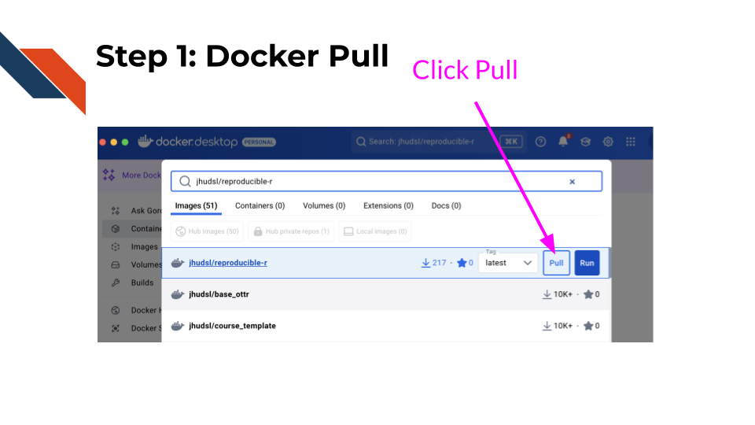
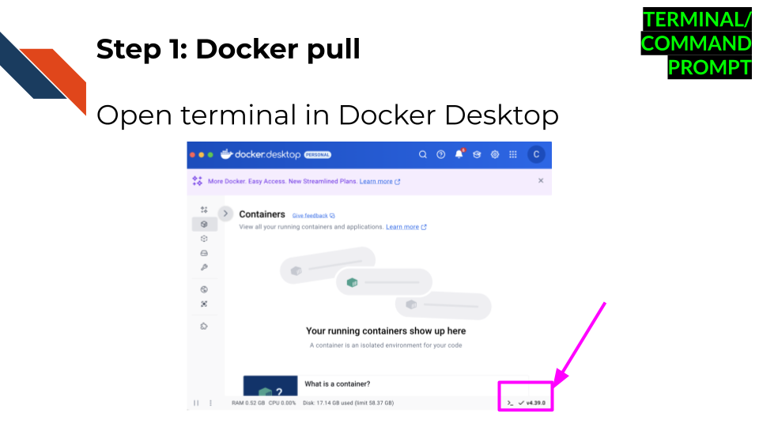
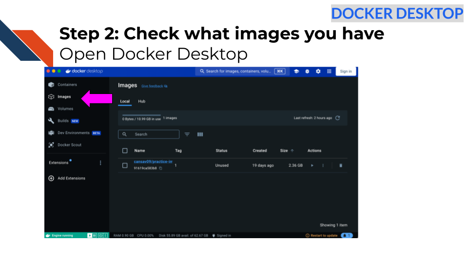
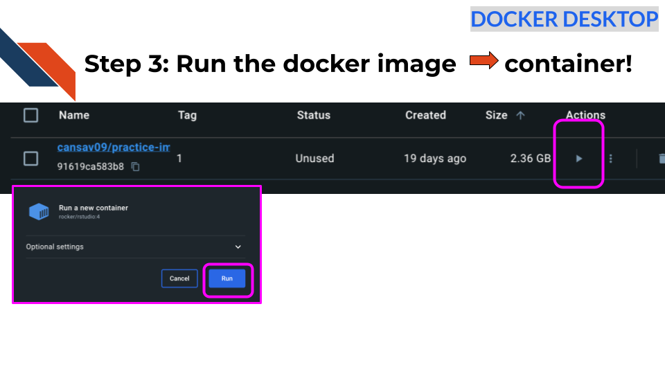
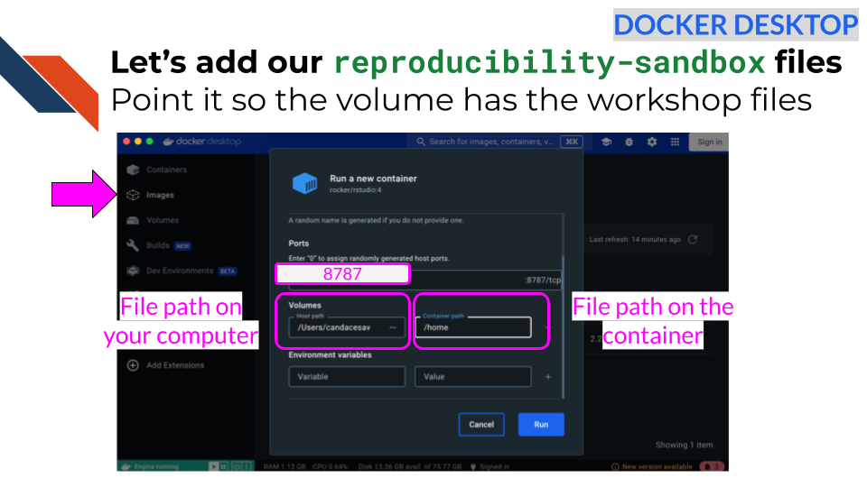
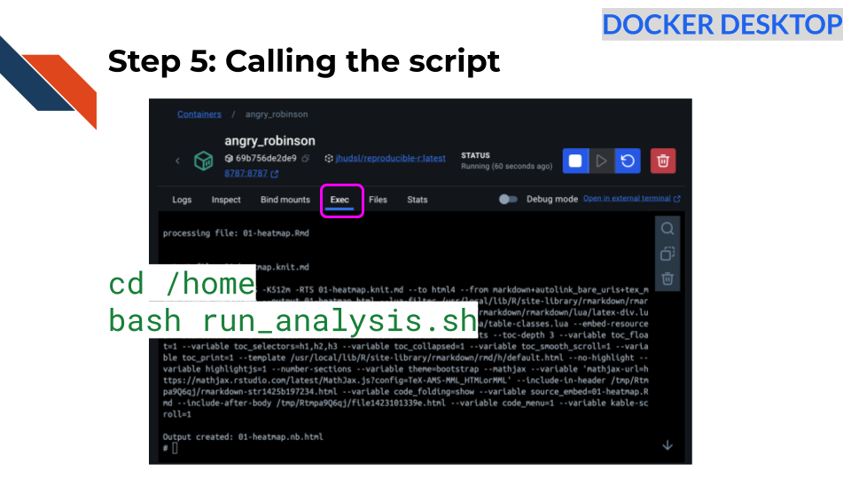
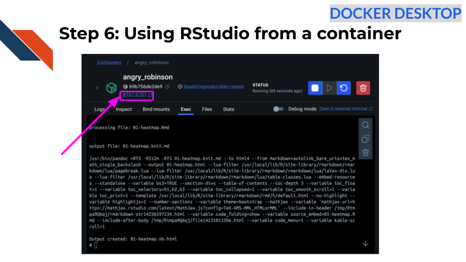
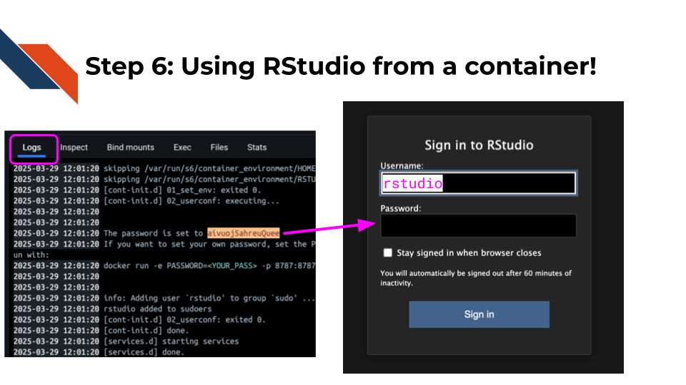

Go here to install Docker Desktop, following the instructions for your particular operating system.
If you don’t have a Docker account yet, create an account when prompted, or go here. After you install Docker, start up Docker Desktop by double clicking on the app. It may take some time to start up.
Docker Desktop may ask you to log in to your Docker account.
NOTE: If you completed these steps for the previous workshop you don’t need to do them again!
Create your own copy of this repository
Go to the template repository for this workshop: https://github.com/fhdsl/reproducibility-sandbox
Click the green
Use this template button and then
Create a new repository. If you don’t see this button, you
may need to expand your window.
On the next screen, create a
Repository name.
Choose Public.
Scroll to the bottom and click
Create repository.
Cloning our repository
Open up GitHub Desktop on your computer.
Go to File >
Clone Repository.
Search for your ITN workshop repository name
in the tab that says Github.com. Click on the name of this
repository in this list. You can choose where you’d like it to download
on your computer underneath Local Path.
Click the blue Clone button.
Search for the following image in the search
box of Docker Desktop: jhudsl/reproducible-r.
Click on the pull button for
this image.

Alternatively you could use the command line.
Open terminal in Docker Desktop. Do so by
clicking the lower right corner that has a symbol like this
>_.

Run this command by copy pasting and clicking enter in your terminal to pull the Docker image:
docker pull jhudsl/reproducible-r After the last steps complete, we can see
what images we have by clicking on the Images tab on the
left menu in Docker Desktop. We should see
jhudsl/reproducible-r show up now.

Run this command to see what images we have:
docker image lsNow if we want to launch the image for use, we can use run button that looks like a triangle to turn the image into a container

Alternatively, we could also use
docker run as a command in the terminal:
docker run jhudsl/reproducible-r To see what containers we have running we
check the Containers tab in Docker Desktop.
Alternatively, we can run the following command in the terminal:
docker psOur container is separate from our computer so if we want to use a file we have to attach it using a “volume”.
If we want to run run_analysis.sh there are other ways
we could get the file on our container, but one of the best ways is
using a volume.
A volume is a set of files that are local to our
computer that are accessible by the container.
In Docker Desktop, we can click on the
Images tab in the left menu.
Then click on the play button for our
jhudsl/reproducible-r image.
This time click the downward arrow for running options.
We will add 8787 as the host
port.
Now we can add the file path for our script
file on our computer by clicking on the three dot menu button in the box
that says Host path. Navigate to where you saved your files
earlier from the repository.
For the container path type
/home.
Click Run.
The container will launch this time with your files.

Alternatively, we can do something similar in the terminal.
We can run our Docker container with the volume -v
option.
We can specify a particular file path on our computer or we can give
it $PWD.
Then we can give a : and a file path where we’d like the
files to be stored on the container. Otherwise it will be stored at the
absolute top of the container.
We are also going to add a port specification as well
-p 8787:8787 This will allow us to use RStudio on our
container.
If you are in the directory where you saved the repository files, you can now run:
docker run -v $PWD:/home -p 8787:8787 jhudsl/reproducible-r
The reason you need to be in the directory with your files is because
$PWD is a special environment variable that stores the
absolute path of the current working directory. This will enable the
next step to call the script file.
Note that if you already did this using the buttons in Docker Desktop you may get an error that the port is already allocated. You can stop your other container (by clicking the trash button near the listed container in your Containers tab) to rerun this from the command line.
To use code on the fly interactively from the
command line we can click on the container name (if needed) and click on
the Exec tab in Docker Desktop

Go to the home directory specified to where our files were added by typing the following and pressing enter after:
cd /homeNow try to run the script.
bash run_analysis.sh
Great! Now you should see the script running. You will know because you will see text about what the script is doing.
After a bit you should see the following:
Output created: 01-heatmap.nb.htmlAlternatively if you have been working in the terminal, we could open a new terminal and use the following:
docker exec -it <REPLACE_WITH_CONTAINER_ID> bash /home/run_analysis.shAnd this should work!
Similarly after a bit you should see the following in the terminal:
Output created: 01-heatmap.nb.html Click on the link that says 8787:8787 at the
top of your Docker Desktop (in the Container tab) OR go to your internet
browser and type in localhost:8787.

Now type in “rstudio” for your username and then find the password that was set in your Docker logs and copy and past that for your password. (It will likely be in red).

Click submit.
Now you can develop code from RStudio from a container that is shareable!
Keep in mind you can install packages from here but they will not be saved to the original image after you stop the container. To add software to your image you will need to modify your image which you can find instructions on how to do this in our full course.
Go to your
reproducibility-sandbox repository online on GitHub.
Click on the Actions tab.
On the left side of the screen click on the
Render R Example action.
Click on the Run workflow
dropdown menu and pick the green Run workflow button. You
should see a light blue banner on the top that says “Workflow run was
successfully requested”.
In your repository go to
.github/workflows/run-r-notebook.yml.
Take a look at this workflow file and try to
answer these questions:
Go back to the Actions tab. You
may need to refresh the page.
Click on the Workflow run in the center of
the page that also says Render R example.
Click on the small box that says
render-notebooks.
Click on the dropdown arrow where it says
Run R analysis example to see what code was run.